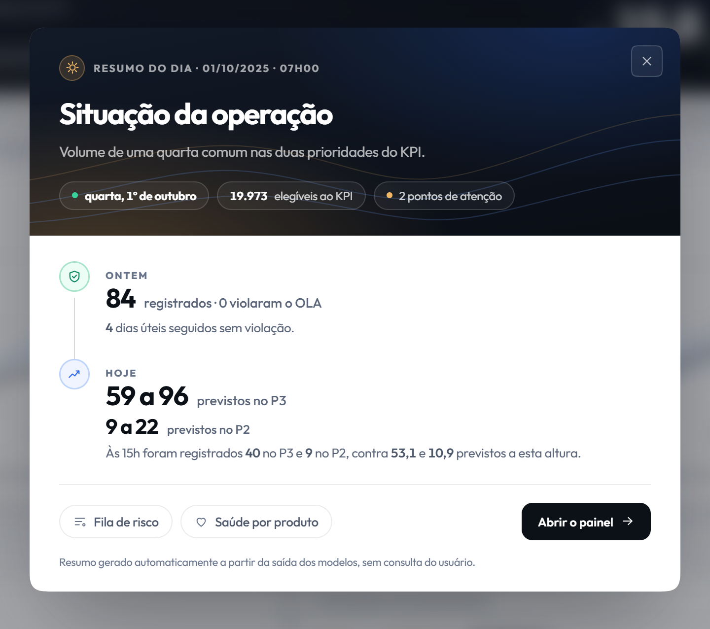

<style>
/* ═══ slide 25 · variação B · o resumo como ele chega ═════════════════════════
   A composição anterior redesenhava o resumo em HTML e ligava cada linha à sua
   procedência por fios. Ficou uma folha de anotações: muita marcação e pouca
   coisa acontecendo. O dono do projeto reprovou.

   Aqui o objeto é a tela de verdade, o mesmo modal que a demonstração vai
   abrir, num quadro inclinado. À esquerda, três linhas curtas e um relógio que
   marca 07h. A sala vê o produto, não um diagrama do produto.

   O relógio é o único desenho e ele existe por um motivo: o resumo não é uma
   consulta, é um horário. O ponteiro anda até as sete quando o slide entra.

   A imagem é o recorte do modal em figs/10_morning_brief.png, tirado do print
   sprints/sprint-3/prints/07-modal-briefing.png com uma margem que deixa ver o
   painel desfocado atrás. O print inteiro, com a página escura em volta,
   virava uma mancha ilegível deste tamanho. Corte de 01/10/2025 às 07h; os
   números saem de data/app/painel.json.
   ══════════════════════════════════════════════════════════════════════════ */
.brb .body{padding-top:14px}
.brb .tt{font-size:52px;letter-spacing:-1.9px}
.brb .cena{flex:1;display:flex;align-items:stretch;gap:44px;margin-top:16px;min-height:0}

.brb .lado{width:392px;flex-shrink:0}

/* o relógio das sete */
.brb .rel{display:flex;align-items:center;gap:18px}
.brb .rel svg{width:64px;height:64px;flex-shrink:0}
.brb .rel .mostrador{fill:none;stroke:#D6DEE9;stroke-width:2}
.brb .rel .pont{stroke:var(--accent);stroke-width:3;stroke-linecap:round;
  transform-origin:32px 32px;transform:rotate(-90deg)}
.brb.is-active .rel .pont{animation:hora 1.1s var(--out) 700ms forwards}
@keyframes hora{to{transform:rotate(120deg)}}
.brb .rel .h{font-size:44px;font-weight:900;letter-spacing:-2px;color:var(--head);
  line-height:1;font-variant-numeric:tabular-nums}
.brb .rel .k{font-size:15px;color:var(--tx2);margin-top:7px}

.brb .itens{margin-top:34px}
.brb .it{display:flex;gap:16px;padding:22px 0}
.brb .it + .it{border-top:1px solid #DCE4EF}
.brb .it .n{font-family:var(--mono);font-size:12.5px;color:var(--accent);padding-top:4px;
  flex-shrink:0}
.brb .it b{display:block;font-size:19px;font-weight:700;color:var(--head);letter-spacing:-.25px}
.brb .it span{display:block;font-size:15.5px;line-height:1.45;color:var(--tx2);margin-top:7px}
.brb .it span em{font-style:normal;color:var(--head);font-weight:700}

/* a tela, em perspectiva */
/* o teto em px e não em %: max-height percentual só resolve contra altura
   definida do pai, e aqui o pai é um item de flex esticado. Com 578px a
   imagem de 1440x1276 cai em 652 de largura e sobra respiro dos dois lados. */
.brb .palco{flex:1;min-width:0;display:flex;align-items:center;justify-content:center;
  perspective:2000px;perspective-origin:70% 50%}
.brb .tela{border-radius:14px;overflow:hidden;border:1px solid #DCE4EF;
  box-shadow:0 50px 100px -44px rgba(15,23,42,.55);background:#fff;
  opacity:0;transform:rotateY(9deg) rotateX(3deg) translate3d(-46px,0,-110px)}
.brb .tela img{display:block;height:578px;width:auto;max-width:100%}
.brb.is-active .tela{animation:chega 1.2s var(--out) 900ms forwards}
@keyframes chega{to{opacity:1;transform:rotateY(3deg) rotateX(1deg) translate3d(0,0,0)}}

.brb .fecho{display:flex;align-items:flex-start;gap:12px;margin-top:auto;padding-top:20px;
  border-top:1px solid #DCE4EF;font-size:16.5px;line-height:1.45;color:var(--tx)}
.brb .fecho .ic{width:20px;height:20px;color:var(--accent);margin-top:2px;flex-shrink:0}
.brb .fecho b{color:var(--head);font-weight:700}
</style>

<section class="slide light brb" data-slide="25" data-var="a" data-quem="hygor">
  <div class="mesh"></div><div class="grid-bg"></div>
  <div class="hd">
    <div class="bi"><svg viewBox="0 0 28 28" fill="none"><path d="M6 22L12 14L16 17L22 8" stroke="#fff" stroke-width="2.2" stroke-linecap="round" stroke-linejoin="round"/><circle cx="22" cy="8" r="3" stroke="#3B82F6" stroke-width="1.5"/><circle cx="22" cy="8" r="1.2" fill="#3B82F6"/></svg></div>
    <div class="bn">Cronos</div><span class="bt">BANCA FINAL &middot; 15/09/2026</span>
    <div class="tag">Tal como aparece no sistema</div>
  </div>
  <div class="body">
    <span class="eb"><span class="rv" style="--d:240ms">O resumo que abre às sete</span></span>
    <h1 class="tt"><span class="mask" style="--d:340ms"><span>Morning Brief</span></span></h1>

    <div class="cena">
      <div class="lado">
        <div class="rel rv" style="--d:640ms">
          <svg viewBox="0 0 64 64" aria-hidden="true">
            <circle class="mostrador" cx="32" cy="32" r="27"/>
            <line class="pont" x1="32" y1="32" x2="32" y2="14"/>
            <circle cx="32" cy="32" r="2.6" fill="#2563EB"/>
          </svg>
          <div>
            <div class="h">07h00</div>
            <div class="k">1º de outubro de 2025, uma quarta comum</div>
          </div>
        </div>

        <div class="itens">
          <div class="it rv" style="--d:1300ms">
            <span class="n">01</span>
            <div><b>Chega sozinho</b><span>ninguém abre, ninguém pergunta. O resumo está na tela quando o dia começa.</span></div>
          </div>
          <div class="it rv" style="--d:1440ms">
            <span class="n">02</span>
            <div><b>Ontem e hoje, nas duas prioridades</b><span>o que fechou no dia anterior e a faixa prevista para hoje, em <em>P2 e P3</em>.</span></div>
          </div>
          <div class="it rv" style="--d:1580ms">
            <span class="n">03</span>
            <div><b>Uma frase escrita por modelo de linguagem</b><span>só a abertura. Ela <em>recebe os números prontos</em> e não calcula nada.</span></div>
          </div>
        </div>
      </div>

      <div class="palco">
        <div class="tela"></div>
      </div>
    </div>

    <div class="fecho rv" style="--d:2200ms">
      <svg class="ic" viewBox="0 0 24 24"><circle cx="12" cy="12" r="9.4"/><path d="M12 6.8V12l3.4 2"/></svg>
      <span>Cada linha tem um botão que leva à tela de onde ela veio. <b>O resumo é o começo do caminho</b>, não um relatório para arquivar.</span>
    </div>
  </div>
  <div class="ft"></div>
</section>
